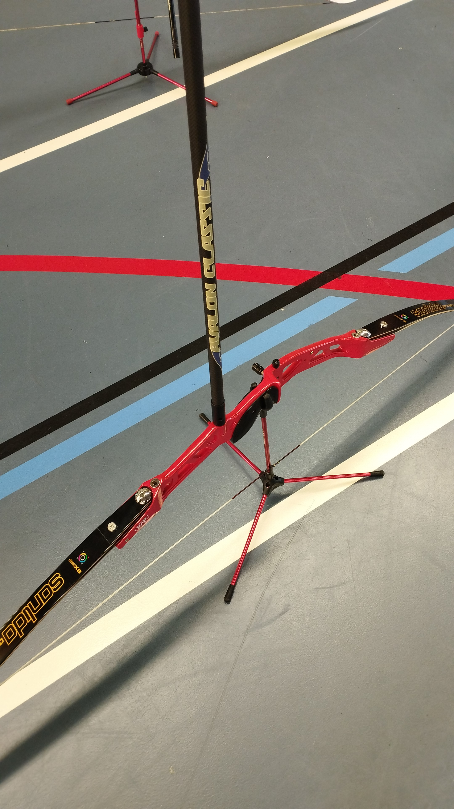

Le tir à l'arc est une activité physique et mentale qui exige de la patience, de la précision et un contrôle de soi. Il existe plusieurs formes de tir à l'arc, comme l'arc traditionnel, l'arc à poulies, et le tir en compétition avec des cibles fixes ou mobiles.
Le traditionnel SV (arc traditionnel sans viseur) , L'arc AV( traditionnel avec viseur) et l'arc à poulie(très puissant avec viseur):


L'arc, les flèches, la cible, et les protections sont les éléments de base du tir à l'arc. Chaque composant doit être choisi en fonction de l'usage et des préférences de l'archer.


De plus il est possible d'ajouter un viseur, un stabilisateur ou un cliqueur à son arc.

Les techniques de tir sont variées : posture, visée, respiration, et décoche de la corde sont autant d'éléments à maîtriser pour un tir réussi. Ces mouvements sont long à mettre en place et nécessite une rigueur importante afin de ne pas tirer d'une mauvaise manière
Retour à l'accueil